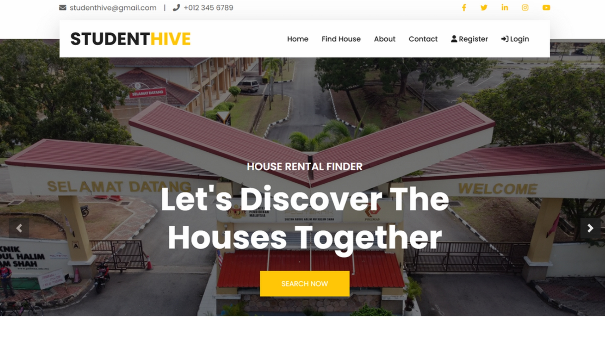
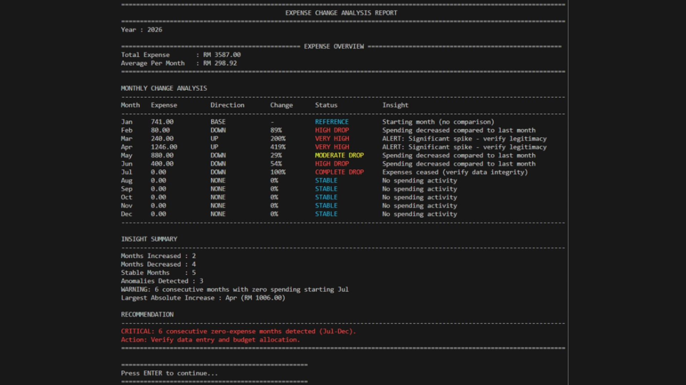
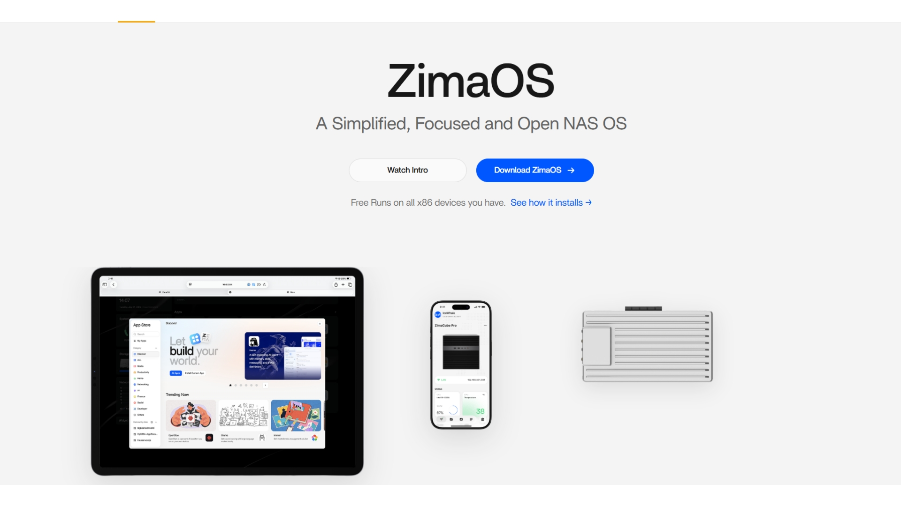
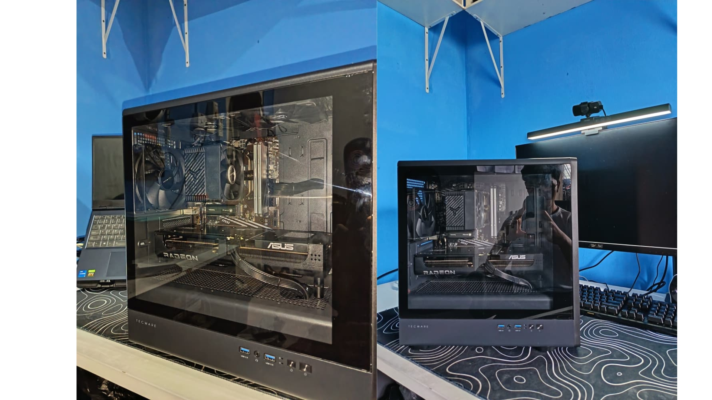
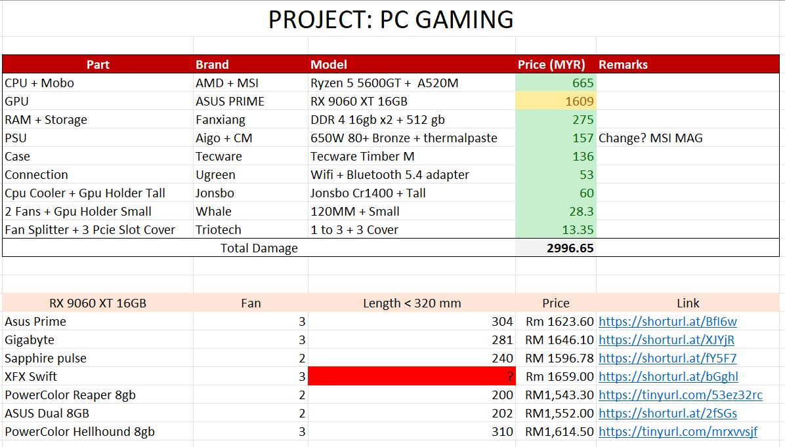
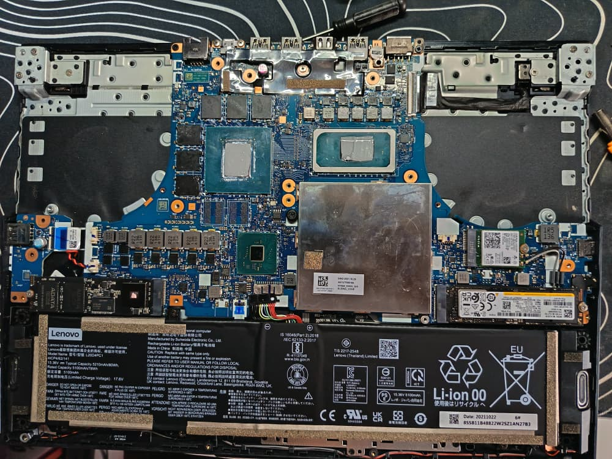

02 / PROJECTS & PRACTICAL EXPERIENCE
DESIGN · BUILD · TROUBLESHOOT
Ideas turned into
real solutions.
A collection of academic work and hands-on technology
projects covering software development, database systems,
self-hosted storage, computer hardware, and practical IT
problem-solving.

ACADEMIC PROJECT · WEB DEVELOPMENT
01
FINAL YEAR PROJECT
StudentHive — Student Rent House System
Designed and developed a centralized rental
listing platform tailored to POLIMAS students.
Search and filtering features help students
explore accommodation options by budget,
room type, and available amenities.
Recognition: Gold Medal at
the Information and Communication Technology
Exhibition (November 2024) and Bronze Medal
at the TechIC Technology Innovation Competition
(October 2024).
Web Development
Database Design
Search & Filtering
↗

UTeM · ACADEMIC WORKSHOP 1
02
C++ & DATABASE SYSTEMS
Track and Spend (T&S)
A console-based personal finance and budgeting system
designed to help university students track daily income
and expenses, manage monthly budgets, and make more
informed spending decisions.
C++
SQL
MySQL
CRUDS
Database Design
ERD
3NF Normalization
RBAC
↗

PERSONAL PROJECT · HOME LAB
03
SELF-HOSTED INFRASTRUCTURE
Home Cloud Storage Lab
Repurposing an old laptop as a home server
using ZimaOS. The setup includes an SSD
and an additional 4 GB RAM upgrade, bringing
total memory to 8 GB, to explore centralized
file storage and self-hosted services.
ZimaOS
SSD & RAM Upgrade
Storage Management
Personal project — configuration and
functionality are still being developed.

HARDWARE · PC ASSEMBLY
04
PERSONAL HARDWARE PROJECT
My First Custom PC Build
Built my first custom desktop PC and gained
practical experience in component selection,
compatibility, physical assembly, cable
management, and initial system checks.
PC Assembly
Hardware Compatibility
Troubleshooting

HARDWARE RESEARCH · CONSULTATION
05
INDEPENDENT TECHNICAL ASSISTANCE
PC Specification Consultation
Helped a friend plan a custom PC configuration
by researching component specifications,
comparing compatibility, and considering
budget, intended usage, and future upgrades.
Component Research
Budget Planning
PC Compatibility

PRACTICAL IT SUPPORT
06
PART-TIME IT SERVICES
Laptop Maintenance & System Setup
Apply practical IT support skills to laptop
cleaning, thermal paste replacement, Windows
installation, basic software setup, hardware
upgrades, and data transfer assistance.
Windows
Hardware Maintenance
PC Troubleshooting
↗
My Approach to Building
I learn by combining theory with practical work:
understanding the problem, researching possible
solutions, implementing a suitable approach, testing
the result, and documenting what I learn along the way.